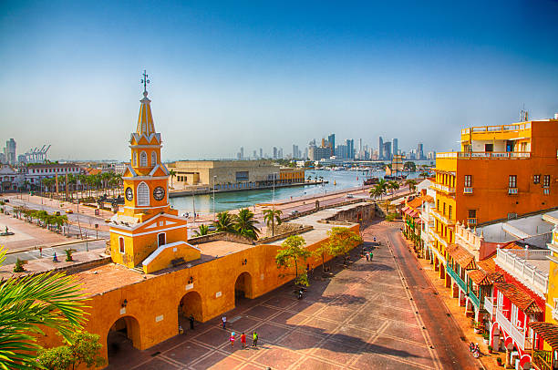

Além das famosas Bogotá, Medellín e Cartagena, a Colômbia tem vários lugares imperdíveis para conhecer, desde praias caribenhas até ruínas arqueológicas. As cidades são encantadoras e o povo, muito acolhedor. Por isso, se o que você procura é um destino para visitar e viver experiências inesquecíveis, viaje para a Colômbia.
PONTOS
TURÍSTICOS

CARTAGENA
Cartagena das Índias, ou simplesmente Cartagena, é o segundo principal destino do país que consegue abrigar diversas cidades em uma só. A mais conhecida é a cidade amuralhada, com várias ruínas e construções muito bem preservadas com mais de 400 anos. Toda a região é constituída pelos bairros do Centro, San Diego, Matuna e Getsemani, e que concentra algumas das suas principais atrações, como o Palácio da Inquisição e a Torre do Relógio. Como é uma cidade costeira, Cartagena oferece aos visitantes muitos pratos à base de peixes, camarões e lagostas, mas a carne de boi, frango, porco e outras carnes mais exóticas, como o coelho, também são encontradas na região.
Como é uma cidade costeira, Cartagena oferece aos visitantes muitos pratos à base de peixes, camarões e lagostas, mas a carne de boi, frango, porco e outras carnes mais exóticas, como o coelho, também são encontradas na região.
SAN ANDRES
Se você quer conhecer uma autêntica ilha caribenha, San Andrés é o lugar certo! O local é famoso pelo mar com diversas variações de verde e azul que brilham nos dias ensolarados. Com toda essa beleza, é claro que você não deve perder a oportunidade de mergulhar para observar a variedade de espécies marinhas que a ilha abriga. Outra dica de passeio é seguir para a Praia Peatonal, localizada bem no pequeno centro de San Andrés, onde também está a maioria dos hotéis desta ilha. É uma praia pública, bem popular com diversos restaurantes ao redor com redes de vôlei disponíveis, além de serviço de aluguel de cadeiras, barracas e de jet ski. Não deixe de conhecer as ilhas Acuario e Johnny Cay, em um passeio no mesmo dia. A ilha Acuario é um imenso aquário natural, cheio de piscinas formadas pelos bancos de corais, onde você pode nadar lado a lado de peixes de várias espécies.
CALI
Cáli é um excelente destino para quem gosta de aprender mais sobre a cultura e a história da Colômbia. O centro histórico da cidade é riquíssimo nesse aspecto, onde você não pode deixar de fora do seu roteiro o Museu Arqueológico La Merced, o Museu la Tertulia e o Museo Caliwood, este último dedicado às produções cinematográficas da região.
BOGOTÁ

Se sobrar um tempinho, não deixe de conhecer a Catedral de Sal, que fica localizada em Zipaquirá, município a 50 km de Bogotá, considerada a primeira maravilha turística da Colômbia.